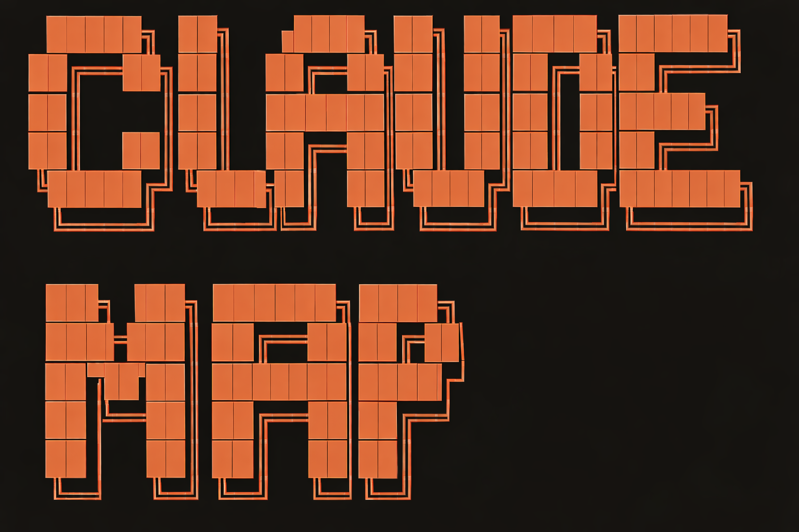
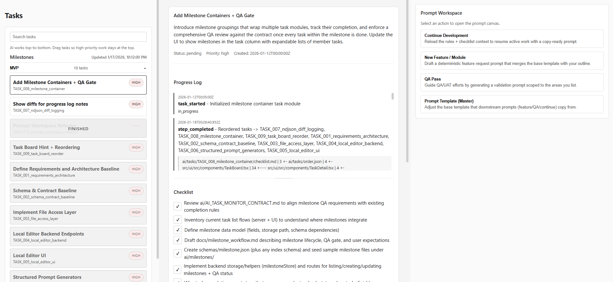

Five projects that carry the thesis.
-

ClaudeMap Google Maps for AI-augmented codebases.
An open-source Claude Code plugin that builds a navigable concept-organized map of any repo. Code clusters by what it actually does, with health overlays showing what's working and what's broken. Slash commands drive the map:
/explainwalks Claude through any path,/showjumps to whatever you ask for.233★ on GitHub · 541 npm downloads · 160 in a single day on the v0.2.0 release · Distributed as
@quinnaho/claudemap.Stack. JavaScript · MCP · Claude Code skills.
-
Glint3D A 3D engine designed for humans and machines.
Custom C++/OpenGL engine with two equal surfaces: an interactive UI for human scene editing, and a JSON Ops pipeline + headless CLI for AI and automation workflows. PBR materials, glTF/FBX/OBJ/PLY import, both rasterization and CPU ray-tracing paths. The dual-mode design isn't rhetoric — it's enforced by the data format (JSON Ops with a versioned schema) so both audiences operate on the same primitives.
Includes an in-tree QEM mesh decimation algorithm, exposed standalone as QEM Studio with feature-aware preservation of boundaries, sharp edges, and high-curvature regions. QEM Studio's performance writeup documents a +91% slowdown from a "textbook" optimization, why it happened, and why it was reverted — the kind of result most projects don't publish.
Stack. C++ · OpenGL · GLSL · CMake · Assimp · Eigen · Dear ImGui.
-

Blueprint Health Analyzer A static analyzer for Unreal Engine Blueprints.
An Unreal Editor plugin and commandlet that audits Blueprint and asset health across a project. Three scan modes: full project, current selection, or any asset and everything that depends on it. Produces deterministic reports with stable signature hashing, so the same plugin powers both the editor dashboard and CI quality gates that fail builds on critical findings.
Built under the immersalab label. Targets UE 5.6 / 5.7. The first commercial product I've shipped on a real engine.
Stack. C++ · Unreal Engine 5.
-

PhasePal An AI desktop companion that lives on your screen.
Real-time LLM chat with animated 3D characters, voice synthesis, and local/cloud provider routing. Founding Unity Engineer at Consistency AI (Oct 2025 – Jan 2026). I built the inference latency optimization across multiple LLM backends, the safety guardrails for real-time AI conversations, and the Unity character systems — cursor tracking, window perching, VRM model support, state machines.
Shipped on Steam.
Stack. Unity (C#) · VRM · multiple LLM backends · voice synthesis.
-

Milestone Local AI task management with structural guardrails.
A local-first tool with an
ai/folder full of contracts, schemas, and per-task progress logs that AI agents must follow. Every agent reads itsAI_*_CONTRACT.mdand writes progress into structured NDJSON — so a task literally can't be marked complete without the right log entries. The guardrails (Machine Summary Blocks, schema-validated checklists, diff payloads) are the product.The thesis: AI productivity collapses without legibility surfaces, and the surfaces have to be enforced, not requested.
Stack. TypeScript · React/Vite · Express · NDJSON.